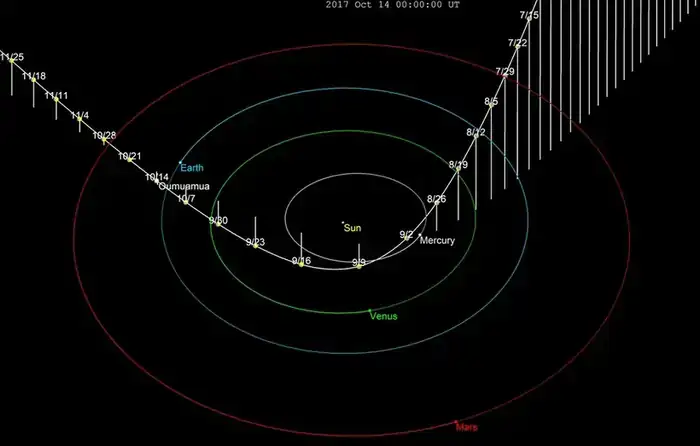
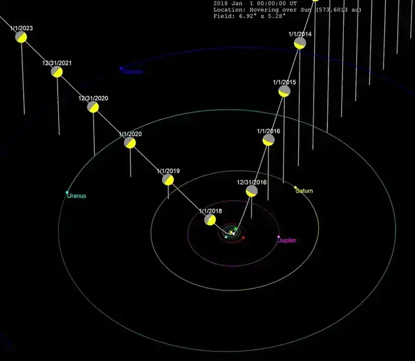
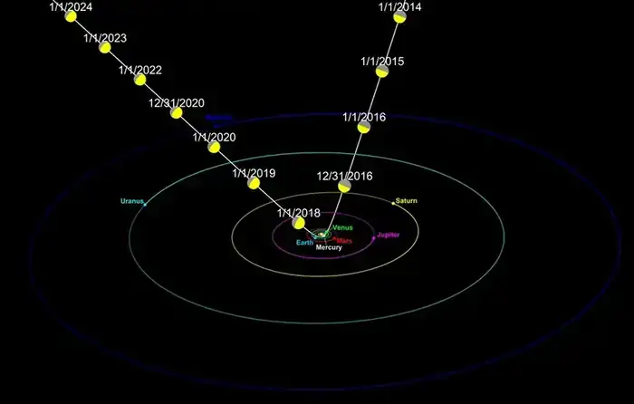

The object
1I/2017 U1, named 'Oumuamua, was detected on 19 October 2017 by Pan-STARRS in Hawaii. Its speed and trajectory showed it had come from outside the solar system — the first interstellar object observed. It was already leaving when it was found, and it was observed for only a few weeks.
Maps, diagrams and images






Two features were strange. Its brightness varied by a factor of about ten as it tumbled, implying an elongated shape — perhaps ten to one — and no coma or tail was detected. And after accounting for gravity, it showed a small non-gravitational acceleration, the kind outgassing produces in a comet.
The claim
In 2018 Shmuel Bialy and Avi Loeb argued in Astrophysical Journal Letters that a thin artificial light sail could explain the acceleration without detectable outgassing, since a sail needs no gas. Loeb developed the argument in a book; the paper itself was more careful, offering it as a possibility rather than a conclusion.
The counter-arguments are that other explanations exist — outgassing of volatiles that are hard to detect (CO or H₂ ices), a nitrogen-ice fragment, or torques from the tumbling — and that no observation favours artificial over natural. Breakthrough Listen found no radio emission.
Documented: an interstellar object, elongated, tumbling, with a small non-gravitational acceleration.
Documented: no outgassing detected, which is the puzzle.
Not established: an artificial origin. It is one hypothesis among several, and it is not favoured by any measurement.
Not established: the natural explanations either — none has been demonstrated conclusively.
The honest label: fringe, because the claim is not supported by evidence, not because it is absurd. 'Oumuamua remains genuinely unexplained in detail.
Why it is in the archive
Because it is the rare case of a fringe claim made by a credentialed scientist about a real anomaly, and it shows how thin the line is: the same object supports a cautious paper, a bestselling book, and a great deal of nonsense.
Open resources on this topic
- PapersOpen-access articles: DOAJ · PubMed Central · Internet Archive Scholar
- BooksPublic-domain and borrowable copies: Open Library · Project Gutenberg · Google Books · Internet Archive
Cite this page
Momin, S. (2026). 'Oumuamua as a Solar Sail. The Larger World Archive. https://drsamonline.github.io/LARGE_GLOBE/oumuamua-solar-sail.htmlMomin, Sohil. “'Oumuamua as a Solar Sail.” The Larger World Archive, 2026, https://drsamonline.github.io/LARGE_GLOBE/oumuamua-solar-sail.html.Momin, Sohil. “'Oumuamua as a Solar Sail.” The Larger World Archive, 2026. https://drsamonline.github.io/LARGE_GLOBE/oumuamua-solar-sail.html.@misc{oumuamua2026oumuamua,
author = {Momin, Sohil},
title = {'Oumuamua as a Solar Sail},
year = {2026},
howpublished = {The Larger World Archive},
url = {https://drsamonline.github.io/LARGE_GLOBE/oumuamua-solar-sail.html},
note = {Last reviewed 20 November 2026}
}Last reviewed 20 November 2026 · Corrections policy · this page is not peer reviewed
Sources for this page
- Wikipedia, “ʻOumuamua” — the object, the observations and the explanationsen.wikipedia.org
- Bialy & Loeb (2018), ApJ Letters — the solar-sail paperdoi.org
- Wikipedia, “Interstellar object” — what is known about the populationen.wikipedia.org
- Wikipedia, “Comet tail” — what outgassing looks like when it is visibleen.wikipedia.org